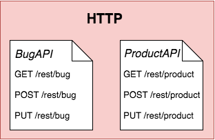
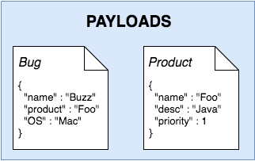
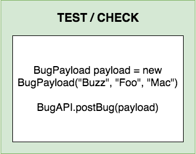
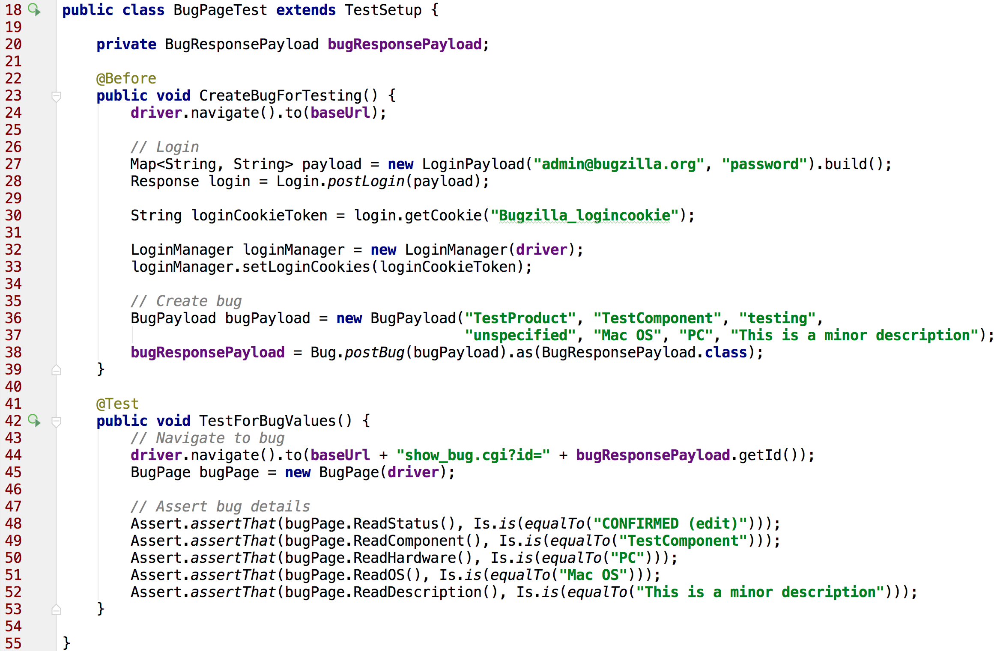

REST APIs and WebDriver: In Perfect Harmony - Created by Mark Winteringham / @2bittester © 2017
REST APIs and WebDriver:
In Perfect Harmony

'I suppose it is tempting, if the only tool you have is a hammer, to treat everything as if it were a nail'
- Abraham Maslow, 1966
Source code
State management
Algorithm
Codified oracle
Reporting
Execution
Deterministic
STATE MANAGEMENT
STATE MANAGEMENT
ALGORITHM
CODIFIED
ORACLE
ORACLE
State Management
STATE MANAGEMENT



Dog fooding?
Algorithm
STATE MANAGEMENT
ALGORITHM

State Management (again)
STATE MANAGEMENT
STATE MANAGEMENT
ALGORITHM
STATE MANAGEMENT
ALGORITHM

Wrap up - Why is this worth doing?
- Deterministic
- Increased speed
- Reduced maintenance costs
Recommended reading
- End-to-End Testing Considered Harmful - Steve Smith
- Integrated Tests Are A Scam - J.B. Rainsberger


Questions?
@2bittester